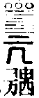

卍新纂大日本續藏經 第69冊
No.1370 淮海原肇禪師語錄 (1卷)
【(侍者門人)實仁．宗文．法奇．守愿．行佑．了元．善之．淨證．法從．紹熏．普璋．文煥．淨伏．慧行．文謙．正因．法恩．德紀．可能．持志．覺孫．惟康．宗和．如止．有智．慧雲．若舟 編】
第 1 卷
淮海肇和尚語錄總目
No. 1370
淮海和尚語錄
通州報恩光孝禪寺淮海和尚語錄
師紹定六年。十月初三日。在安吉州道場受請入院。指佛殿。道著佛字。潄口三年。因甚今日燒香禮拜袈裟同肩。
拈州帖。判得虗空。千言萬語盡朝宗。靈然自得。一毫頭上通消息。倘或見聞未泯。聽取下文。
指法座。經行及坐臥。常在於其中。為什麼今日特地孤峻。一片月生海。幾家人上樓。陞堂祝香。此一瓣香。恭為祝延
今上皇帝聖躬萬歲萬歲萬萬歲陛下恭願。如天不老。似日方中。億萬年永壽丕圖。大千界咸歸正統。次拈香。奉為
判府節制。太尉 府判華文郎中。洎闔郡文武宷僚祿筭增崇。流通正教。次拈香。奉為前住臨安府徑山興聖萬壽禪寺 特賜佛心禪師浙翁大和尚。用酬法乳之恩。遂斂衣就座。乃云。善言言者言所不能言。善迹迹者。迹所不能迹。前日孤峰頂上。嘯月眠雲。快活不徹。今朝十字街頭。拖泥帶水。定業難逃。笑洞山擔板逃名。譏睦州編蒲賣峭。殊不知左之右之。無可不可。何以見得。雨後有人耕綠野。月明無犬吠花村。復舉誌公和尚一日令人傳語南嶽思大禪師。何不下山教化眾生。一向目眎雲漢作甚麼。思大云。三世諸佛。被我一口吞盡。何處更有眾生可化。師云。誌公尺頭有寸。思大秤尾無星。箇箇論量不出。畢竟誵訛在什麼處。流水下山非有意。片雲歸洞本無心。
當晚小參。神光不昧。萬古徽猷。入此門來。莫存知解。新光孝進院之初。斷斷不欲作法於涼事不獲已。略作一家醼。管顧諸人。爭奈別無可有。拈主丈。主丈子見義勇為。拔貧作富。貴圖其間一箇半箇。知慚識愧去。卓一下。江南儘。有江北全無。
復舉法燈禪師道。本欲深藏巖竇。隱遁過時。盖緣先師有未了公案。出來為渠了却。時有僧出問云。如何是未了公案。燈和聲便打云。祖禰不了。殃及兒孫。師云。哦成月下風前句。便有人傳作鬼詩。
春齋施主上堂。一不成二不是。平蕪盡處是青山。陽氣發時無硬地。直得搖氷楊柳。冷眼豁開。帶雪梅花。笑容可掬。即非時節因緣。是名真法供養。畢竟誰是知恩者。普化踢倒飯床。臨濟家常添鉢。
元宵上堂。處處元宵節。家家一椀燈。劫風吹不滅。佛手剔難明。却笑當年德山老。向紙燭滅處打失眼睛。直至如今墮杳冥。還有人救得他麼。喝一喝。
上堂。舉臨濟一日同普化至檀越家齋。濟問云。毛吞巨海。芥納須彌。為復是神通妙用。為復是法爾如然。化踢倒飯床。濟休去。次日又赴一施主家齋。濟又問云。今日供養何似昨日。化又踢倒飯床。濟云是則是太麤生。化云。瞎漢佛法有甚麤細。師云風不來樹不動。一對無孔鐵槌。就中一箇最重。汝等諸人。衣單下無事。試秤量看。
佛涅槃上堂。如來不出世。亦無有涅槃。春至百花開爛熳。秋來萬物盡凋殘。與麼與麼。無端無端。剔起眉毛子細看。
上堂。今朝三月十五。桃花亂落如紅雨。靈雲一見不疑。也是泥裏洗土。尀耐釣魚船上謝三郎。更來平地上釘樁搖櫓報恩冷眼看來。一畆之地。三蛇九鼠。
上堂。昨日閙浩浩。今日靜峭峭閙中之事靜中觀。靜中之事閙中了。無可了。十洲春盡花凋殘。珊瑚樹林日杲杲。
上堂。舉五祖示眾。今夏諸莊旱損。不以為憂。一百二十僧度夏。舉狗子無佛性話。無人曉得。深可憂也。報恩今夏。諸莊淹沒。深可為憂。若是狗子無佛性話。何暇舉著。還知報恩落處麼。平生肝膽向人傾。相識渾如不相識。
解夏小參。建法幢立宗旨。明明佛勑曹溪是。項上枷重千斤。游江海涉山川。尋師訪道為參禪。脚下泥深三尺。懸崖撒手。生陷鐵圍。百尺竿頭。一場狼藉。那更踞曲彔木。說東道西。坐長連床。閉眉合眼。總是虗空釘橛。揑木生花。報恩與你一時併當了也。擊拂子。驚起暮天沙上鷹。海門斜去兩三行。
舉僧辭趙州州云。有佛處不得住。爛泥中有刺。無佛處急走過。回頭便招禍。三千里外逢人不得錯舉。出門猶更頻分付。僧云。恁麼則不去也。不知誰是知音者。州云。摘楊花摘楊花。春風無定度。吹起過隣家。
出隊上堂。三家村裏獨木橋邊。鞠躳酬直揖。笑面受嗔拳何似明州奉化縣裏憨彌勒逢人閑拊背。乞我一文錢。
佛心禪師忌日。拈香。咄者黃面浙子。我又何曾識你。險崖拶倒笑呵呵。盡大地人扶不起。扶得起。橘逾淮而化為枳。
上堂。大野雲橫。長空露滴。人人眼裏有筋。處處路頭驀直。因甚轉脚蹉過不知。美食不中飽人喫。
至受業。眾請升座。古者道。行脚莫歸鄉。歸鄉道不成。溪邊老婆子。喚我舊時名。古人傍家行脚。大膽小心。光孝。於眾眼難瞞處。與古人相見。行脚要歸鄉。歸鄉莫猒頻。誰知席帽下。元是昔愁人。咄。
上堂。舉黃檗在南泉會中為首座。一日向南泉位中坐。值泉赴堂。泉問。長老甚年中行道。檗云。威音王已前。泉云。猶是王老師兒孫。檗便過第二位坐。師頌云。桃李無言春滿庭。蹈歌椎鼓過清明。誰家別舘池塘裏。一對鴛鴦畫不成。
受平江雙塔請辭眾上堂。三年結盡衲僧冤。肯向虗空颺碌甎。堪笑老來無定力。又移瓶錫過吳天。
平江府雙塔壽寧萬歲禪寺語錄
入院踞方丈。掌上太阿。秤頭斤兩領得便行。匙挑不上。次升座拈香祝
聖畢就座。乃云。四簷疎雨滴。雙塔一鈴鳴。發揮靈山會上微笑真機。揭示少室峰前單傳密旨。直得三世諸佛。暗裏攢眉。六代祖師。望中斫額。新壽寧贏得口子喫飯。何故。但見皇風成一片。不知何處是封疆。
復舉保壽開堂。三聖推出一僧。壽便打。聖云恁麼為人非但瞎却這僧眼。瞎却鎮州一城人眼去在。壽便歸方丈。師云。二老與麼。大似持水納石。壽寧今日或有人推出一僧。便與震威一喝。直教盡大地人。三日耳聾。
當晚小參。鼓聲前鍾聲後。一句全提。脫窠離臼。者裏猛省得去。早是埋沒諸人。何況更待鍾鳴鼓響。燈燭交羅。坐立儼然。交馳問答。堪作何用。雖然更須知有紫羅帳裏撒真珠始得。喝一喝。
復舉。汾陽和尚道。直饒入得汾陽門。未入得汾陽室在。入得汾陽室。未見汾陽人在。師云。西河師子固是威獰。未免藏身露影。壽寧則不然。纔入壽寧門。便入壽寧室。纔入壽寧室。便見壽寧人。何故。野色更無山隔斷。天光直與水相通。
上堂。籬[狦-(狂-王)+土]壁倒。橋斷路窮。何況又歲盡年窮。窮則通。通則變。遠在目前。近不可見。拍膝云。鐵壁銀山通一線。
嘉禾天寧大川和尚至上堂。舉阿難問迦葉。世尊傳金襴外。別傳何物。迦葉召阿難。阿難應諾。迦葉云。倒却門前剎竿著。師頌云。荒田萬頃沒人耕。歉歲嘉禾合穗生。野老盡知為國瑞。寸金寸土力須爭。
上堂。霏霏梅雨洒危層。五月山房冷似氷。莫謂乾坤乖大信。未明心地是炎蒸。雪竇將一本草書示人。直是龍蛇飛動。點畫分明。吽吽中間些子誵訛處。醉索張顛辯不真。
上堂。舉吾本來茲土。傳法救迷情。一花開五葉。結果自然成。師云。達磨大師無端將烏豆換人眼睛。汝等諸人。切須照顧。
西巖和尚自徑山赴定慧至上堂。龍囦上客。蘊大寶珠。未嘗容易顯露。壽寧對眾一時指出。也是家貧願隣富。
請藏主上堂。世尊道。始從鹿野苑。終至跋提河。於是二中間。未嘗談一字。忽有人問一大藏教甚處得來。只向道。休對曾參問曾晢。從來孝子諱爺名。
開爐上堂。火爐頭話無賓主。撥不開兮揑不聚。眼眼相看。面面廝覩。發機須是千鈞弩。
建寧府開元東山和尚赴虎丘至上堂。人從建安來。却得徑山信。報道東澗一滴。漲破滄溟。袞上劍池。普天帀地。直得魚龍蝦蠏。悉皆喪命。且同流一句作麼生道。西方日出卯。
佛生日上堂。清淨法身。泥猪疥狗。洗盡恒河。何曾離垢。雲門跛脚。師盡力翻筋斗。壽寧將底雪深冤。賴有一雙窮相手。
中夏上堂。三世諸佛。先行不到。六代祖師。末後太過。中間句子。罪不重科。一佛陀二元和三曼他。唵蘇嚧悉唎娑訶。
重陽上堂。霜降水落。天高氣清。鴈飄颻而新到。蟬寂寞而無聲。是今古登高之節。見天地萬物之情。略將些兒俗氣。要換諸人眼睛。卓主丈。莫教錯認定盤星。
上堂。舉雲峰悅和尚云。識得主丈子。一生參學事畢。乃舉起云。者箇是主丈。那箇是參學事。遂橫按云。楖[木*栗]橫擔不顧人。直入千峰萬峰去。師云。莫恠坐來頻勸洒。自從別後見君稀。
赴建康府清涼辭眾上堂。星兒滯貨。九年冷坐。便作貴賤商量。不識依然蹉過。石頭城畔。自有知音。脩篁帶雨輕敲玉。黃菊迎秋半吐金。
建康府清涼廣惠禪寺語錄
入院。拈香祝
聖畢。就座云。道無形。視者莫能覩。巖前片片飛花雨。道無方。行者莫能至。路上單牌只五里。酌然親見親到。何妨或去或來。姑蘇臺邊雲奔電捲。石頭城畔草偃風行。豁開向上關。滅却正法眼。閫外清風有何限。復舉無著訪文殊。殊云。南方佛法。如何住持。著云。末法比丘少奉戒律。殊云。多少眾。著云。或三百或五百。著問文殊。此間如何住持。殊云。凡聖同居。龍蛇混雜。著云多少眾。殊云前三三後三三。師云。古今商量盡墮在數量。有問清涼如何住持。只向道。水到渠成。
當晚小參。無邊剎境。自他不隔於毫端。山圍故國周遭在。十世古今。始終不離於當念。潮打空城寂寞回。便見賓主互融。風雲一致。只如清涼山裏萬菩薩。到處覓不得。未審過在什麼處。擊拂子。天高誰側耳。地闊少知音。
復舉法眼示眾云。識得凳子。周帀有餘。雲門道。識得凳子。天地懸殊。清凉道。識得凳子。正好著衣喫飯。
權管保寧上堂。開畬種粟。晝飡夜寢。溈仰父子。固是不費光陰。猶墮時人功幹。山僧今夏喫清涼飯。走北奔南。借鳳凰臺。東說西話。還免傍觀怪笑也無。竪拂子云。一朝權在手。看取令行時。
祈雨上堂。舉雲門道。今已半夏了也。敲磕處道將一句來。自代云。怛蜜唎。又云怛蜜唎智。又云。榼。師云。雲門者一道真言。瞞清涼不得。如今半夏了也。不敲磕處。切忌道著。枳利枳利。諸漏諸漏。清涼者一道真言。亦瞞諸人不得。何故。但見片雲生碧落。不知雨意在他山。
上堂。曾到喫茶去。未到喫茶去。趙州肝膽齊傾。多少不知慚愧。戴角披毛行異類。
冬至小參。枯木巖前。多分岐路。大洋海底。幾變桑田。山僧未免向乾坤未判已前。陰陽不到之處。指出一条平直道路。與汝諸人大家履踐。拂子畫一畫云。裂開氷縫。透出脚底陽和。瞥見風雲。驗得目前氣候。畢竟是什麼時節。冬行春令。
上堂。舉臨濟問黃檗佛法的的大意。師頌云。黃檗山前抱璞投。高安灘上始知羞。雖然索得連城價。直至如今痛未休。
上堂。若論此事。不可狀不可名。目不他祖。猫看老鼠穴。無下口處。狗舐熱油鐺。饒你聞擊竹而聵。見桃花而盲。也是日午打三更。
台州萬年報恩光孝禪寺語錄
踞方丈。釘樁搖櫓。解纜放船。縱能赤脚弄明月。蹈破五湖波底天。喝一喝。且過一邊。
升座拈香祝
聖畢就座。乃云。深山巖崖。會有陳年佛法。平田淺草。放出焦尾大虫。直得萬壑風生。千峰雲湧。四萬八千丈華頂。列在下風。五百十六位應真。無處回避。不存目擊。豈涉言詮。會人境於一如。融古今於當念。可以奉固陵之香火。報可以報列聖之殊恩。以何為驗。竪拂子。半消滑石橋邊雪。一點桃源洞裏春。
復舉韶國師道。通玄峰頂。不是人間。心外無法。滿目青山。師云。韶國師久貧乍富。自謂傾城不換。平田看來。也是弃却黃金抱碌甎。
當晚小參。天台南石橋北。有一句子。黃面老漢。三百六十餘會。說不分明。缺齒老胡。十萬里西來。只道箇不識。凜乎若朽索御六馬。危然如一髮引千鈞。新長老。無端蹉口道著。作箇入門歡子。喝一喝。
上堂。八峰崷崒。雙澗潺湲。時時覿面。日日敷宣。可憐穿耳客。錯怪老平田。
上堂。春山潑黛濃。春草連天碧。欄中水牯苦貪青。牧童費盡平生力。以拂子作鞭牛勢。叱叱。
上堂。竺土大仙心。東西密相付。報汝諸禪流。徹底要自悟。悟則不無。且密付箇什麼。電影還連後夜雷。簷聲不斷前旬雨。
廣潤度領和尚至上堂。東澗源流。清聲歷歷。廣潤大千。金無涓滴。拈主丈卓一下。石橋飛瀑千尋。不從者裏流出。
徽宗皇帝忌日上堂。道遠乎哉。觸事而真。一毛吞於巨海。聖遠乎哉。體之則神。百草頭總是法身。曾無夷夏之殊。豈有死生之間。還知報恩句子麼。擊拂子。八峰雙澗水。一念萬年香。
佛成道上堂。老胡一檐不惺惺。六載商量颺不成。正覺山前開得眼。依然錯認定盤星。
淳祐八年天使入山。恭奉
聖旨。修供羅漢。披度僧員。升座拈香祝
聖。伏願。非烟非霧。遍法界以無邊。為瑞為祥。祈邦家之有慶。有僧出問 聖恩廣大下天台。衝起烟霞兩道開。方廣雲中金磬響。半千尊者笑盈腮。學人上來請師舉唱。答云。天邊多雨露。枯木解花開。進云。一句逈超今古外。萬年仰祝 聖明君。答云。四海謳歌日月明。進云。記得阿育王問賓頭盧。承聞尊者親見佛來是否。尊者以手策起眉毛云。會麼。王云。不會。時如何。答云。似膠投漆。進云。尊者云。阿耨達池龍王請佛齋時。我亦預其數。又作麼生。答云。飯裏有砂。進云。只今五百應真悉預此會。畢竟有何感格。答云。鉢擎香積國。錫挂萬年松。進云。太平有象元無象。凡聖含靈共一家。答云。巢知風穴知雨。進云。還許學人讚祝也無。答云。鼠口裏也有象牙。進云。華頂一萬八千丈。長與 君王作壽山。答云。知恩方解報恩。僧禮拜。乃云。大方無外。發乾坤獨露之機。至鑑無私。極日月照臨之處。坐斷毗盧頂上。示現閻浮界中。應真不借。游戲神通。有時寶炬分輝。燦曇花於橋畔。有時金鍾落響。現方廣於深雲。不舍如來化度門。成就眾生行願海。只如無私底句。如何擊揚。拂子拂一拂。松枝淨拂蒼苔石。坐看雲從天外歸。
監收上堂。一葉落天下秋。白雲流水共悠悠。一雨潤大地周。高低禾黍盡盈疇。還有不知帝力者麼。夕陽斜照外。橫笛倒騎牛。
佛心禪師忌拈香。東湖水西湖水。拍天波浪起。玉几峰乳竇峰。百帀更千重。平田雖五逆無窖。展家風插香云。熨斗煎茶銚不同。
上堂。白雲澹泞。黃葉颼飂。寒酸窮活計。不在主丈頭。何以見得。捱到水窮山盡處。始知行路是冤讎。
上堂。老倒年華百不能。拈主丈云。蒼松影裏倚孤藤。卓一下。飛泉冷淡有誰聽。空落斷崖千萬層。
上堂陽長陰消。松枯石瘦。溪邊楊柳尚顰眉。領上梅花開笑口。且笑箇什麼。一九二九。相逢不出手。
仰山無境和尚遺書至。上堂。六十光陰。東涌西沈。一彈指頃。塵沙劫永。撲落虗空。南北西東。湛然無境。秤錘落井。拈主丈。箇是集雲峰下四藤條。下下打著。且末後一下。落在什麼處。卓丈一下。蒼天蒼天。
冬至小參。移南辰轉北斗。打就一合乾坤。吞栗棘透金圈。箇是家常茶飯。騰騰任運。著著當機。如魚飲水冷暖自知。似影隨形。短長都見。鼓鍾不作。禮樂云乎哉。問答交馳。人境俱不奪。雖然如是。猶是半提。只如全提一句如何舉唱。擊拂子。冬至寒食一百五。
天基節州府請就兜率寺升座。拈香祝
聖畢就座。有僧出問。啼鳥山呼天子壽。梅花朝祝聖人香。報恩尚見無情物。佛法將何為舉揚。答云。春風多在萬年枝。進云。記得昔日 太宗皇帝幸開寶寺見僧看經問云。看底是什麼經。僧云仁王護國經。還端的也無。答云。題目分明。進云。帝云。既是寡人經。為甚却在卿手裏。其僧無語[妳-女+口]。答云。闔國咸知。進云。皇帝與麼問。其僧與麼答。為復是言中有響。句裏明機。答云。龍袖拂開全體現。象王行處絕狐蹤。進云。可謂鳶飛魚躍堯天闊。海晏河清舜日長。答云。你又從序品起也。進云。只如判府郎中。仁物愛民。獲何報稱。答云。千里人家耕雨露。九天雲外築沙堤。進云。闔郡尊官有何祥瑞。答云。日月開皇道。衣冠拜紫宸。僧禮拜。乃云。一真不動。攝法界之群分。萬化潛通。開八荒之壽域。乾坤泰定。日月運行。具萬德而稱至尊。為一大事而出現。直得虹流電繞。嶽立山呼。以何為驗。擊拂子。碧梧枝上來丹鳳。枯木巖前產紫芝。
鴈山能仁西巖和尚至上堂。雙徑峰頭。姑蘇城裡。相罵饒你接觜。相唾饒你潑水。做夢謾同床。覺來元不是。萬八千丈到天青。四十九盤矗雲起。不隔絲毫三百里。來往惡聲應未已。
甘露長老至上堂。北固樓前眼界寬。長江雪浪潑人寒。如今握手看華頂。何似當年共倚欄。
佛生日上堂。未出母胎。猶較些子。目顧四方。擡脚不起。從茲說大脫空。殃害人家男女。雖越二千餘年。令人恨入骨髓。如何說此冤讎。竪拂子。杓柄在我手裏。
入城歸上堂。田家蚕麥熟。山路綠陰新。杜鵑啼血盡。知是為何人。莫教辜負一年春。
大慈石庭生講師至上堂。定光招手。頑石點頭。不曾開口大義已周。是祖意耶。教意耶。一會儼然如未散。共乘明月過滄洲。
結夏小參。道無方所。證絕堦梯。不住清淨覺場。不泳大寂滅海。溪山雲月處處皆同。春夏秋冬年年相似挂眉間劍。懸肘後符。更說甚身心安居。平等性智。竪拂子。大舍雲籠山嶽靜。石橋雷噴雪霜寒。
結夏上堂。十方聚會。甎頭土塊。不動絲毫。卓主丈。一時擊碎。顆顆驪珠照滄海。
徽宗皇帝忌日上堂。過了春光又一年。香風空鎖上林烟。要知常樂真游處。方廣橋邊無杜鵑。
端午上堂。眾人皆醉。惟我獨醒。舉世混濁。惟吾獨清。三閭兮屈平。鼓瑟兮湘靈。雲中兮軿軿。山鬼兮冥冥。若不揮劍。漁父棲巢。拈主丈卓一下云。曲終人不見。江上數峰青。
天基節上堂。天台有壽山。四萬八千丈。滄溟日初升。先照峰頂上。璀璨琪樹花。粼皴赤藤杖。應真金磬鳴。子晉玉簫響。倚松指劫石。控鶴看海漲。共慶億萬年。吾君壽無量。
上堂。舉大通智勝佛。十劫坐道場。佛法不現前。不得成佛道。師頌云。破鏡不重照。落花難上枝。若言成佛道。開眼墮泥犂。
請修造佛殿上堂。潭又不見。龍又不現。德山當年拆却佛殿。神光不昧。萬古徽猷。平田今日拽轉話頭作麼生。只將片瓦通消息。遮却瞿曇滿面羞。
平江府萬壽報恩光孝禪寺語錄
踞方丈。爛如泥。黑似漆。鐵額銅頭跳不出。直饒別有轉身。也是巖頭道底。
拈省劄。一氣轉洪鈞。斷取妙喜世界。如陶家輪。燁燁優曇花。開此無邊春。
江湖疏。張帆把柂。活計天來大。賴有諸人相應和。櫂歌聲遠播。升座祝
聖畢乃云。欲識佛性義。當觀時節因緣。時節若至。其理自彰。所以靈山會上。說妙談玄。半滿偏圓。開權顯實。且喜沒交涉。達磨西來。游梁歷魏。一花開雪五葉芬芳。旦喜沒交涉。德山臨濟棒喝交馳。拔屑抽釘。解粘去縛。旦喜沒交涉。今日姑蘇城裏。萬壽堂前。人天普集。凡聖交參。且喜沒交涉。既然如是。未免於無交涉處。拈出一機。古今通貫。擊拂子。漁唱樵歌歸至化。蕢桴土鼓樂昇平。
復舉首山念和尚開堂云。佛法付囑國王大臣有力檀那。令燈燈相續至於今日。且道相續箇什麼。良久云。須是迦葉師兄始得。師頌云。遙望青山境色幽。前人田地後人収。中心樹子無人識。惱亂春風卒未休。
上堂。二由一有。一亦莫守。颺却有漏笊籬。拈得無柄苕帚。靜聽黃鸝鳴翠柳。
天童弁山和尚遺書至上堂。﨟月毗嵐風。吹倒太白峰。石女眼中流血。本人換手槌胷。致使萬壽笑亦不成。哭亦不是。拈主丈云拂曉倚筇和雨看。崔嵬依舊在雲中。
佛涅槃上堂。四十九年說不盡。黃鶯睍睆。紫燕呢喃。百萬眾前瞻不足。山花似錦。澗水如藍。恁麼說話帶累瞿曇入地獄如箭。
請修造上堂。目前大道。無證無修。向十字街頭。敲甎打瓦。拈一莖草。現玉殿瓊樓。輕輕彈指處。忘却百城游。
解夏小參。踢翻滄海。赤水無珠。喝散白雲。青天有路。主丈頭無限山川。縱橫隨處。布袋裏大千世界。結解從他放憨。直是放憨。峭措非常峭措。如斯履踐。未稱全提。脫體無依。猶是諸方普請邊事。且別立生涯。如何通信。卓主丈。漠漠水田飛白鷺。陰陰夏木囀黃鸝。
上堂。舉溈山問仰山。一夏作得箇什麼。師頌云。晝飡夜寢尋常事。種粟開畬抂用工父又不慈子不孝。一人詐啞一徉聾。
顯肅皇后忌上堂。萬里無雲萬里天。月生月落幾經年。廣寒夜夜姮娥殿。空使人間望缺圓。
婺州華藏聞老開歐陽外傳送至上堂。昌黎見大顛。腦盖不完全。歐陽遇祖印。鼻孔沒半邊。人其人火其書。非常性燥。毀於佛謗於法。具大闡提。明教辨於前。此處無金二兩。藏六傳於後。俗人沽酒三升。萬壽三緘元不密。從頭挑剔與人看。
上堂。舉芭蕉云。你有主丈子。我與你主丈子。你無主丈子。我奪却你主丈子。拈主丈。者箇如何與奪。卓一下。天上月圓。人間月半。
西余別山和尚赴蔣山上堂。厇愬箇金毛。久踞苕霅上。看他一出六出。賣弄些些。伎倆忽然大哮吼。聞者皆驚喪。且道頷下金鈴什麼人解得。誌公和尚。
謝新舊兩序上堂。象王回旋。師子哮吼。左之右之。爪牙具有。斬新條脫窠臼。百年妖怪虗開口。
上堂。法不隱藏。道無向背。讓祖磨甎。老盧蹈碓。
上堂。百戰場中。罷却干戈。十字街頭。放下主丈。正好劈面贈拳。攔腮與掌。真箇有誰知痛痒。
中夏上堂。拈主丈。從上已來莫不貴重者一著子。進則被前碍。退則被後碍。不進不退被中碍。如何得平穩去。卓一下。駟馬曾逢題柱客。雞鳴暗脫度關人。
上堂。一雨火雲盡。秋氣清如水。飄飄白蘋風。不在秋江起。因思昔日老臊胡。被人打落當門齒。
上堂。叢林共處如登萬斛之舟。大家著力。共濟艱難。東邊底逆風把柂。西邊底順水張帆。只如五兩不搖長年慶快底句子如何舉唱。擊拂子月正颿無影。風回柂有聲。
退院辭眾上堂。地褊難容舞袖長。六年盡是錯商量。語言歌笑無人會。又逐流鶯過短墻。
再住上堂。應菴華和尚云。趙州喫茶我。也怕他。不是債主。便是冤家。者箇是淮南省數鐵錢。掉在無事甲中久矣。誰能把眼覰著。舉口說著。百十年後。姑蘇城裏鹽貴米賤。信手拈來。正用得著。遂高聲云。放下著。復舉應庵和尚再住歸宗云。去時胃雨連宵去。歸來帶水又拖泥。自怪一生無定力。尋常多被業風吹。萬壽亦有一頌。三年去後又重來。逆順門頭盡打開。不是貧兒思舊債。斬新春色滿蘇臺。
溫州江心龍翔興慶禪寺語錄
指山門。孤嶼風高。蜃江水急。龍翔新長老。舡在步下。普請一時證入。驟步入。
室。平地[栽-木+土]荊棘。漫天布網羅。透得過者。碓搖磨磨。
拈州疏。文彩縱橫。金玉敲擊。空生巖畔花狼籍。因甚如此。伯牙與子期。不是閑相識。升座拈香祝
聖畢就座。乃云。三世諸佛說不及處。六代祖師傳不得處。天下老和尚舉不到處。拈主丈。丈免開蜃江瀾翻口。出孤嶼廣長舌。盡底宣揚去也。卓一下。忽有箇衲僧犯眾出來。乾嘔一聲掩耳而去。也是三千年黃河一度清。
小參。臥白雲弄明月。姑蘇城外快活不徹。四月十五。何曾結來。持漏巵酌。深海清輝。堂前成團作塊。七月十五。何曾解來。於其中間。掀翻海嶽。不守長期。何曾禁得足來。三段不同。一言寢削。一片風光何處著。喝一喝。
重九上堂。暮景侵尋節物催。烟波心裏駐浮杯。黃花漸與柑相映。白髮渾如浪作堆。東嶼西嶼巍乎高哉左右顧視云。者裏還有祖師西來意麼。無邊落葉蕭蕭下。不盡長江袞袞來。
上堂。十月小春節。澄江浸碧天。林鴉歸黑陣。汀鷺立寒拳。境物雙忘處。丹青不可傳。有人知此意。請續末後句。
上堂。通身無影像。遍界絕行蹤。始是半提。百不知百不會。喚作半句。泥牛吼落三更月。罔象迷逢赤水珠喚作全提一句得麼。擊拂子下座。
佛成道上堂。瞿曇﨟月八。命帶惡星殺。三更夜半時。覷著眼雙瞎。帶累兒孫摸壁行。將此深心奉塵剎。
解夏小參。海漫漫風浩浩。南北東西何處討。諸人九旬之內。各各泛無底鐵舡。游大圓覺海。逆風把柂。順水張帆。善別風雲。慣諳水脉。便乃不施櫓棹。不滯此岸。不滯彼岸。不住中流。畢竟向什麼栖泊。卓一下。謝郎端的不知處。李廣難封豈等閑。
慶元府阿育王山廣利禪寺語錄
山門。玉几橫陳。鄮峰倒卓。箇般巇嶮門庭。畢竟如何入作。遂驟步云。浩浩清風起寥廓。
拈勑黃。此是聖諦第一義。呈起云。盡大地人。承此恩力。覿面提持。達磨不識。
升座拈香。祝 聖畢就座。乃云。無始劫來。無佛名無眾生名。有為界中。有了義有不了義。故我竺乾大士。放光現瑞。地號六殊勝門。開八吉祥。只要人人親見。一回知道。明月堂前時時九夏。金沙井畔日日宣揚。可以仰讚昌時。同歸聖化。新育王恁麼道。莫別有見處麼。竪拂子。一燈夜印青冥色。長恐世人歸路迷。復舉東山演祖云。山前一片閑田地。叉手叮嚀問祖翁。幾度賣來還自買。為憐松竹引清風。師云。演祖自家活業。一時破蕩了也。後代兒孫如何克紹。竪主丈。不得動著中心樹子。
端午上堂。若論此事。如懸門艾席。如閣地龍舟。面前見得如端的。一度贏來方始休。若更朝碌碌暮悠悠。片帆早已過滄洲。
解夏小參。九旬索飯錢。雲門見利忘義。萬里無寸草。洞山舍己耘人。翠巖賣弄眉毛。老宿狼籍鼠糞。盡是太平芝菌。厄歲螟虫。爭似我育王一眾。飢飡渴飲。閑坐困眠。對脩竹之清幽。揖羣峰之蒼翠。然雖如是。前頭忽有人問。作麼生祗對。擊拂子。四海如今清似鏡。行人莫與路為讎。
上堂。舉僧問趙州。學人乍入叢林。乞師指示。州云。喫粥了也未。僧云。喫粥了也。州云。洗鉢盂去。僧大悟。師頌云。粥了教他洗鉢盂。趙州年老太心孤。錦鱗一躍龍門去。跛鱉盲龜空負圖。
上堂。寒食清明過了。是處綠楊芳草。一片兩片落花。三聲四聲啼鳥。少室門庭盡打開。寥寥不見一人到。育王與麼告報。也是將油洗卓。
淨慈介石和尚遺書至上堂。淩霄同參句。未舉先分付。不解卷舌冥懷。到處為人解註。介然立論。如磐石之堅。脫爾忘言。如南山之固。忽有旁不甘底出來問。畢竟正文。說箇什麼。拍膝云。蒼天中更添冤苦。
啟首座出世東林上堂。廬山高廬山高。最初一步跨壑凌霄。且道主丈子如何分付。拈主丈卓一下。當頭一劄驚天地。直透潯陽江上潮。
上堂。舉洞山示眾云。初秋夏末。兄弟東去西去。直須向萬里無寸草處去。石霜聞云。出門便是草。師云。一人明修棧道。一人暗度陳倉。疑殺天下人。育王主丈子。為見不平。拈主丈。通一線道。卓一下。九堰三江都過了。脚頭到處是長安。
上堂。舉德山托鉢話。師云。德山用盡韜略。只謂年老心孤。巖頭三年無改於父之道。可謂孝矣。且那裏是他密啟其意處。飲罷不知何處去。倚天長劍逼人寒。
上堂。為學日益。為道日損。黃楊逢閏減三分。青松一年添一暈。拈主丈。只如主丈子。吞却山河大地。不見有山河大地時如何。卓一下。
天基節上堂。鄮嶺春生翠欲浮。太平瑞氣接虹流。殷勤願祝無疆壽。一炷清香滿石樓。
上堂。舉洞山參雲門話。師頌云。山邊水邊待月明。暫向人間借路行。如今還向山邊去。只有湖水無行路。
上堂。正月去二月來。千紅萬紫鬪拆爭開。鶯唫諧九奏。蝶拍舞三臺。衲僧家。捱到者般時節。冷眼覷見。始知道。鑊湯無冷處。死燄發寒灰。
上堂。者片田地。靈苗覺場。春生夏長。秋収冬藏。諸人知得四至界畔。落不南北西東。老僧只得拈起簸箕別處舂。
臨安府淨慈報恩光孝禪寺語錄
山門。盡大地是箇解脫門。與汝諸人。同出同入。喝一喝。放憨作麼。
佛殿。過去未來。呈起坐具。總在者裏。畢竟燒香禮拜誰。展坐具云。也是自倒自起。
拈勑黃。國內憲章。寰中號令。一句全提。萬機獨應。
升座拈香祝
聖。就座。乃云。法無定相。遇緣即宗。道絕功勳。隨機應變。他方此界。不離菩提覺場。昨日今朝。總是自家鋪。全無頭面。逈絕羅籠。翻著玉几峰下戲衫。倒頂宗鏡堂前席帽。了無一法與人。直得萬緣俱泯。只如知恩報恩一句。如何顯露。閑翫西湖千頃月。靜看南嶽萬年松。
復舉僧問百丈。如何是奇特事。丈云獨坐大雄峰。忽有問淨慈如何是奇特事。只向道。門前一湖水。
謝兩班上堂。南山叢林。各得其所。左眄如得水龍。右顧如靠山虎。山僧贏得倚欄干。冷看西湖沸烟雨。
重九上堂。採菊東籬下。悠然見南山。竪主丈。鱉鼻蛇頭擎一角。卓一下。白額虎體露元斑。靠主丈。幾多眼目精明者。空把黃花子細看。
開爐上堂。舉溈山示眾云。有句無句。如藤倚樹。疎山問云。忽遇樹倒藤枯。句歸何處。後有古德拈云。好一堆爛柴。師頌云。高原耕種罷。牽犢負薪歸。深夜一爐火。渾家身上衣。
萬年道舊至上堂。舊面重逢。全無一語。噴瀑石橋雷。天鏡西湖水。以我為隱乎。吾無隱乎爾。
請指南首座上堂。舉臨濟在黃檗栽松次。以钁頭打地一下。噓兩聲。檗云。吾宗到汝大興於世。溈山問仰山。當時黃檗只囑臨濟一人。別更有在。仰云有。只是年代深遠。不欲舉似和尚。溈云。雖然吾亦要知。試舉看。仰云。一人指南吳越令行。遇大風則止。師頌云。怪霧妖雲雜曉嵐。令行吳越太森嚴。一針鋒上長安路。多少昏迷獲指南。
冬至小參。拈主丈。群陰剝盡一陽生。卓一下。萬彚根荄盡發萌。惟有淨慈主丈子。相擕敲月上方行。倚主丈下座。
復舉慈明冬夜。僧堂前書此字。其下註云。若人識得不離四威儀中。首座見云。和尚今夜放參。慈明聞之一笑。師云。蜜裏砒霜。酒中鴆毒。惟中者方知。
景德靈隱禪寺語錄
山門。鷲嶺高寒。壑雷震吼。箇裏知歸。推門入臼
拈勑黃。箇是靈山付囑底句子。黃紙黑書。秘而不傳。呈起云。今日當陽捧出。且聽正令旁宣。
禪講疏。拈起云。者一著子。宗通說通。琅琅然如石中片玉。凜凜乎若雪後諸峰。交輝互映妙難窮。
升座拈香。祝
聖畢乃云。法隨法行。法幢隨處建立。南山起雲。北山下雨。猨啼小朵。水潄枯崖。如斯覿面提持。直得聲色俱泯。便見靈山一會儼然未散。肆無說而說。繼不傳而傳。擊拂子。太平一曲祝堯年。
復舉
孝宗皇帝問前住當山佛照禪師云。釋迦佛入山六年。所成者何事。佛照奏云。將謂
陛下忘却。臣僧有頌。問處希奇答處親。當陽一句定乾坤。雪山高暎黃金殿。萬歲巍巍奉至尊。
天基節上堂。聰明冠群倫。儀表正天下。航海梯山。咸歸至化。如何見得。巖莎影裏步祥麟。芳草岸頭嘶駿馬。
上堂。舉慈明室中置一盆水。安劍一口。草鞋一雙。凡見僧來指以示之。師云。已透關者。掉臂而去。見鞭影者。非良馬也。
徑山興聖萬壽禪寺語錄
山門。雙徑五峰。大開門戶。插脚不入。龍翔鳳舞。
勑黃。九天丹鳳舞。一句紫泥封。直得不言而化。不約而同。風從虎兮雲從龍。
法座。水窮雲盡到淩霄。頭上紛紛雪未消。老步只宜平地去。不知何事又登高。
升座拈香。此一瓣香。恭為祝延
今上皇帝萬歲萬歲萬萬歲。陛下恭願。皇圖啟運。興大業於庚申。萬世丕基。歷在躳之甲子。
此香恭為
皇后殿下。萬福萬福。伏願。睢鳩和樂。聞治世之正音。翠羽飛鳴。傳仙家之消息。
此香奉為
皇太子殿下。伏願。撫軍監國。知政化之本原。重傳尊師。正脩道之大道。
此香奉為
太傅宮師大丞相國公。洎
五府合朝文武官僚。同增祿筭。伏願。一德格天。致明君於堯舜。三公位地。成大勳如伊周。
此香奉為
判府侍郎。洎文武官僚。伏願。承流宣化。居九州之最先。治劇剸繁。躐三王之一等。
此香奉為
前住當山第三十二代 特賜佛心禪師浙翁大和尚。用酬法乳之恩。遂就座。
乃云。法不隱藏。道無向背。駈深山巖崖中石頭大小。勘紅塵閙市裏面目有無。直得明月清風。開遮自在。樹林水鳥。演說無窮。新徑山從來口門窄。只領見成受用。樂太平時光。以何為據。含暉亭上望東溟。淩霄峰頂揖南嶽。
復舉。馬祖遣智藏。馳書上國一禪師。開見一圓相。國一於中著一點封回。忠國師聞云。欽山猶被馬師惑。師頌云。覿面相呈尚不然。豈通紙上敘寒暄。可憐千里同風者。剛把封皮作信看。
當晚參。夾迦掩室於摩竭。山上有鯉魚。淨名杜口於毗耶。井底有蓬塵。二千年前說不盡底家私。今夜被徑山一時揣出。諸人還知麼。以拂子打一圓相。不勞懸石鏡。天曉自雞鳴。
舉白雲演祖示眾云。頻頻喚汝不歸家。貪向門前弄土沙。每到年年三月裏。滿城開徧牡丹花。不會作客。勞煩主人。徑山亦有一頌。不須呼喚自還家。何用重添眼裏沙。若是吾家真種草。三千里外摘楊花。
佛心禪師忌拈香。當年煞不知時節。曾此庭前立深雪。了無一法可當情。錦綉肝腸化成鐵。屈不可雪恨難消。驢尿栴檀一炷燒。
上堂。舉陸亘大夫問南泉。肇法師也奇怪。解道天地與我同根。萬物與我一體。泉指庭前花云。大夫。夫應喏。泉云。時人見此一株花。如夢相似。師頌云。萬木凍欲折。孤根暖獨回。前村深雪裏。昨夜一枝開。
元日上堂。去年登山正月一。百事成狼籍。今歲升堂正月一。萬事皆周畢。從他歲序推迁。時光變易。拈主丈。惟有主丈子。依然黑似漆。卓一下。向下文長。付在別日。
佛祖讚頌
出山相
正覺山前折本來。分明有口亦難開。誰知未入摩耶腹。已向閻浮起禍胎。
啞子觀音
水月光中入定身。明明開眼受諸塵。莫言伎倆無人識。啞子從頭說向人。
蓮葉相
一葉蓮花苦海舟。得隨流處且隨流。手提晝夜一百八。應是從頭數未休。
達磨渡江
蹈翻地軸與天關。闔國人追不再還。去路一身輕似葉。長江千古浪如山。
舡子
悠悠漾漾幾烟波。拊棹長歌更短歌。不遇錦鱗吞直鈎。滿舡無柰月明何。
寒山拖屐執帚
拾得菜筒茄串
手捻乾茄串。筒盛苦菜滓。逢人亂提掇。滋味落誰家。
浙翁和尚
中鄮峰必死毒。用臨濟向上錯。六處賣狗懸羊。四海傾湫倒嶽。錯錯。好彩無人相學。
受業師觀首座
編籬護竹。引水澆花。松間風細。石上筇斜。面目分明見在。兒孫誰守生涯。歷劫令人恨不已。只因教我著袈裟。
分死心頌六祖偈
六祖當年不丈夫。賣柴檐折便必麤。黃梅會裏菩提樹。一斧和根斫得無。
倩人書壁自塗糊。白底是白烏底烏。賺殺幾多求劍客。茫茫依樣畫葫蘆。
明明有偈言無物。畢竟款從囚口出。靈龜曳尾可憐生。大似抱贓而呌屈。
却受他家一鉢盂。被人趕著費分疎。者般潑賴閑家具。好彩兒孫不用渠。
辭史丞相呼召
氷雪堆中萬木摧。日邊吹暖到江梅。枯枝自歎生來北。縱得春風也不開。
北堂寄布
兒子今年始是貧。布單賣了只空身。老婆心切重相寄。包褁將來轉不親。
送高老瑞世
鼻咲諸方作戲場。看看棚上到君忙。從來美酒無深巷。莫怨春風舞袖長。
無庵孟節使飯僧
菴中一物本來無。將向諸方餵瞎驢。驗得不知慚愧者。君山吞却洞庭湖。
辭董侍郎半山
坎止流行無定形。玉麟有命到林扄。凍雲不逐春風起。虗負鍾山一半青。
贈相士
滃霧蒸雲撥不開。蒼松怪石老崔嵬。箇中易見還難見。又費先生到一回。
送信禪人(時廼師大川正却淨慈命)
煨芋高風屬乃翁。閉門不識紫泥封。子歸致我深深意。恐在三更月下逢。
送超禪者(別浦小師)
雲峰別曲久凄然。惆悵無人續斷絃。浩浩清聲滿苕霅。月明猶有夜歸舡。
送通典座
包笠和雲頂夕陽。懸崖危磴遶羊腸。前頭探得溪深淺。應咲平田杓柄長。
天童弁山和尚見招
四海如今幾弟兄。橫飛直上振家聲。我方閑臥君多病。此意如何寫得成。
辭荊溪吳都運上封請
石橋南畔萬年松。六載清陰手自封。霹靂一聲驚變化。又將移上祝融峰。
送福禪人
欲落未落林間葉。南蜚北飛天際雲。歸家會得出家意。揚子渡頭秋十分。
自翁
萬象窮邊獨露身。從生至老沒疎親。著衣喫飯尋常事。成現何曾問別人。
贈徐都料
小巧工夫妙莫倫。不由繩墨運風斤。南山門下成功日。媿殺紛紛血指人。
送唐筆羅漢與 賈丞相
手持貝葉坐盤陀。一默無言口太多。諸相盡空猶用遣。毗耶城裏問維摩。
和 御製靈隱千佛偈
惟佛與佛。等無差別。量比太虗。面如滿月。真相無生。妄見有滅。一念萬年。紅爐點雪。
送江西復藏主
洪惟此道何遼漠。一花五葉開還落。枝子派子分不分。今之古之皆成錯。有祖挺出西江西。淳熈年中曾大作。黃金殿上日月明。草鞋屢挂龍床角。即今兒孫滿大唐。淩滅門風聲捻惡。復子的是西家隣。昂然獨立雞群鶴。歸儒歸墨痛掃除。景仰前脩要無怍。平田險絕難栖泊。三年冷坐同蕭索。笑指金文束高閣。萬里秋空翮難縛。臨岐別我希一言。向道莫莫莫莫莫。
送愿藏主游江淮
今日三明日四。相賦羣狙作兒戲。南斗七北斗八。一大藏教阿喇喇。愿子澤國難滯留。春風吹活主丈頭。胡僧不識老蕭處。千古長江流不去。無明荒草沒蘆花。悲風颯颯飛胡笳。問我覓轉送行語。畐塞虗空不能舉。掀翻海嶽遇知音。等閑瓦礫成黃金。
送虎丘徹維那之靈隱(介石子也)
首座為眾說破。
愚菴聞和尚。奉 朝旨住持資福禪寺。就本寺受請日引座。玲瓏巖畔絕安排。一拶全身墮嶮崖。絕後再甦欺不得。眼空佛祖便張乖。直得末山斂袵。鐵磨潛身。聲價四馳。恩來禁苑。時緣既至。正令當行。幸希允從。毋事謙抑。
淮海和尚語錄(終)